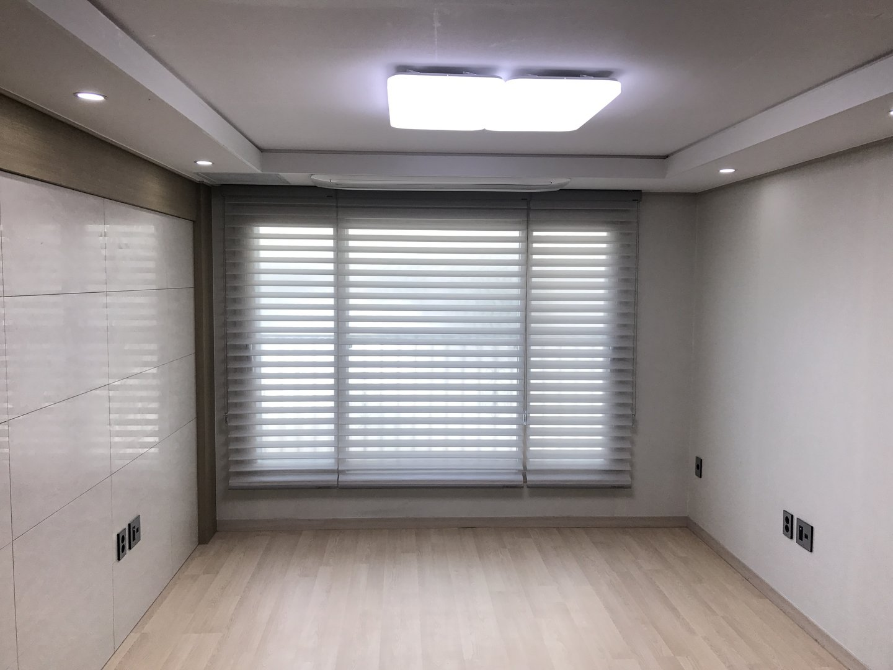
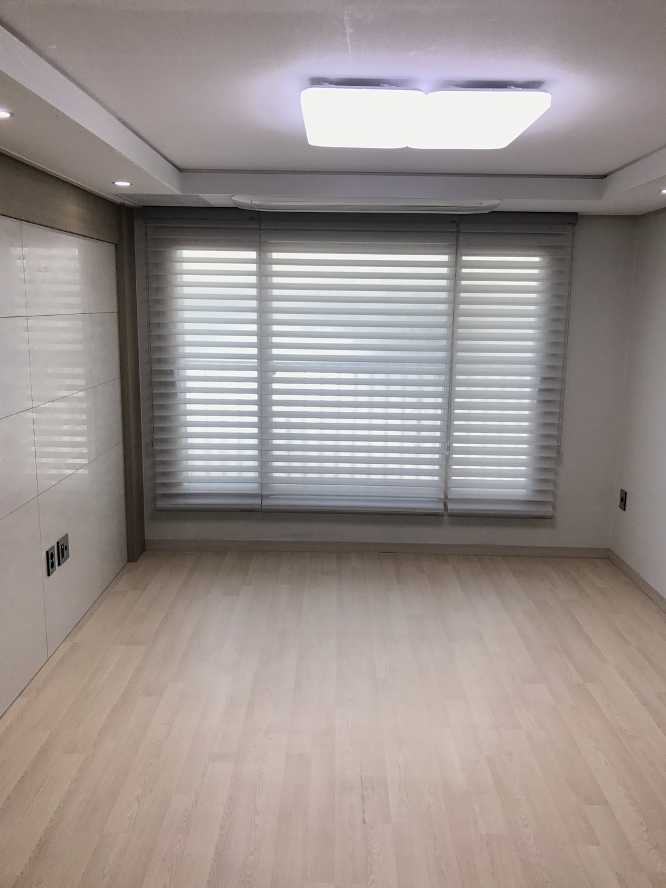
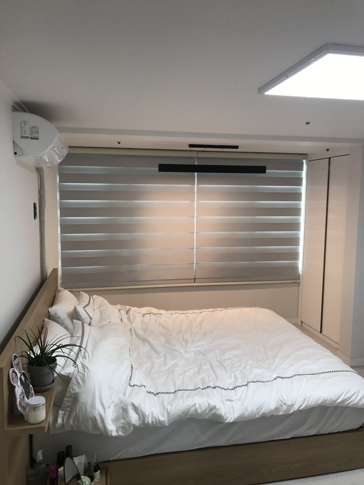
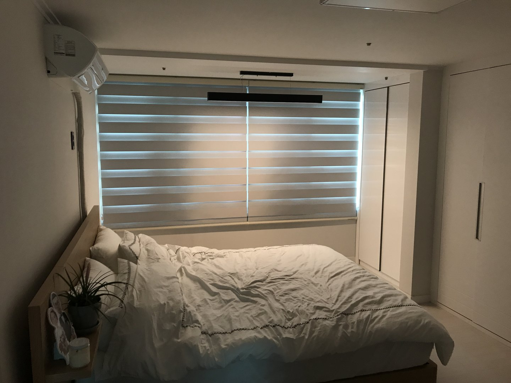

2017년 7월 2일 시공
경산 상가주택
거실 트리플쉐이드 · 안방 암막콤비블라인드

경산에 있는 상가주택 시공입니다. 거실은 그레이 트리플쉐이드, 안방은 암막 콤비블라인드로 갔습니다. 같은 집인데 방향을 정반대로 잡았습니다.
따솜커튼블라인드는 대구·경북 전 지역을 방문 실측하고 시공합니다. 경산·대구·구미·김천·청도·칠곡·성주·고령은 정실장(010-5495-9500)이 직접 나갑니다.
안방을 먼저 하시고, 3주 뒤에 거실을 하셨습니다
처음 연락 주셨을 때는 안방만 하겠다고 하셨습니다. 암막 콤비블라인드 두 짝이었습니다.
3주쯤 지나서 다시 연락이 왔습니다. 거실도 해달라고 하셨습니다.
이런 순서가 사실 제일 좋습니다. 한 방을 먼저 써 보시면 본인 집에서 뭐가 부족한지가 나옵니다. 카탈로그를 보고 고르는 것과 3주 살아보고 고르는 건 정확도가 다릅니다.
실제로 거실은 안방과 완전히 다른 방향으로 정했습니다. 안방에서 암막을 써 보시고 나서 "거실은 이러면 안 되겠다"가 명확해지신 겁니다.
집이 온통 밝으면 흰 블라인드는 벽에 묻힙니다
이 집은 벽도 천장도 밝은 화이트 계열이고, 바닥도 밝은 톤 마루입니다. 상가주택 신축에서 흔한 조합입니다. 넓어 보이고 깔끔합니다.
여기에 흰색이나 아이보리 블라인드를 달면 어떻게 되냐면, 창이 사라집니다. 벽과 블라인드가 같은 밝기라 경계가 안 보입니다.
창은 거실에서 제일 큰 면이고 시선이 제일 먼저 가는 자리입니다. 그게 벽에 묻히면 방이 넓어 보이는 게 아니라 밋밋해집니다. 초점이 없는 사진 같은 상태가 됩니다.
그래서 그레이로 갔습니다. 이 집에서 유일하게 진한 색입니다. 창 한 면만 톤을 내리니까 거실 구조가 잡혔습니다.
그레이가 무난해서 고른 게 아닙니다. 어두운 집이었으면 그레이는 안 썼습니다. 벽이 이미 회색빛이거나 조도가 낮은 집에 그레이를 넣으면 방이 가라앉습니다. 색은 제품이 아니라 그 집 밝기를 보고 정합니다.

넓은 창을 한 짝으로 뽑지 않은 이유
거실 창이 넓습니다. 이런 창을 통짜 한 짝으로 뽑을 수도 있습니다. 이음선이 없어서 사진으로는 제일 깔끔합니다.
그런데 폭이 넓어지면 원단이 감기는 축이 길어집니다. 축이 길면 가운데가 아래로 처집니다. 눈으로는 안 보이는 몇 밀리미터인데, 원단이 감길 때는 이게 다 쏠림으로 나옵니다.
처음 몇 달은 멀쩡합니다. 반년쯤 지나면 원단이 한쪽으로 밀려 감기고, 한쪽 끝이 브라켓에 쓸립니다. "자꾸 삐뚤어진다"는 연락의 대부분이 이 경우입니다.
그래서 세 짝으로 나눴습니다. 대수가 늘어 금액은 조금 올라갑니다. 대신 축이 짧아져 처짐이 없어지고, 조작도 훨씬 가볍습니다.
나눈 게 실용적으로도 낫습니다. 거실 창은 전체를 다 내릴 일이 생각보다 적습니다. 오후에 해가 드는 쪽 한 짝만 내리는 날이 훨씬 많습니다.

트리플쉐이드는 밝기를 단계로 씁니다
트리플쉐이드는 이름 그대로 원단이 세 겹입니다. 앞뒤로 비치는 망지가 있고 그 사이에 불투명한 띠가 들어갑니다. 띠 위치를 조금씩 어긋나게 하면서 빛을 조절합니다.
그래서 켜고 끄는 게 아니라 단계가 됩니다. 완전히 열면 유리창 그대로, 조금 겹치면 밖은 안 보이는데 실내는 밝고, 다 겹치면 상당히 어두워집니다.
거실에 이게 맞는 이유가 있습니다. 거실은 하루 종일 쓰는 방이라 시간대마다 필요한 밝기가 다릅니다. 오전에는 그대로 열어두고, 해가 정면으로 들어오는 시간에만 반쯤 겹치면 됩니다.
반쯤 겹친 상태가 실제로 제일 많이 쓰는 상태입니다. 밖에서 안이 안 보이는데 실내는 조명을 안 켜도 되는 밝기가 나옵니다.

안방은 정반대로 갔습니다
안방은 침대 머리 쪽이 창입니다. 침대 헤드가 창 바로 아래 붙어 있습니다.
이 배치에서 제일 먼저 확인하는 건 여름 새벽입니다. 6월이면 다섯 시 조금 넘어서 밝아집니다. 창이 머리 위에 있으면 눈 감고 있어도 밝은 게 느껴집니다.
그래서 안방은 암막 콤비블라인드로 갔습니다. 콤비블라인드도 트리플쉐이드처럼 겹치는 방식인데, 불투명한 밴드를 암막 원단으로 씁니다. 밴드를 완전히 겹치면 빛이 거의 안 지나갑니다.
거실은 밝기를 세밀하게 쓰는 게 목적이고, 안방은 필요할 때 확실히 캄캄해지는 것이 목적입니다. 요구가 다르면 제품도 달라집니다.

암막인데 완전히 캄캄하지 않은 이유
암막 제품을 달고 나서 제일 많이 나오는 이야기가 "가장자리로 빛이 샌다"입니다. 먼저 말씀드립니다. 원단 문제가 아니라 구조입니다.
블라인드는 창틀 안이든 밖이든 어딘가에 걸립니다. 원단은 좌우 브라켓 사이에서 감기기 때문에 양옆에 몇 밀리미터씩 여유가 필요합니다. 이 여유가 없으면 원단이 브라켓에 쓸려서 몇 달 안에 상합니다.
그 틈으로 빛이 들어옵니다. 방 전체를 밝히지는 못하고, 양옆에 얇은 선으로 보입니다.
줄이는 방법은 있습니다. 창틀 안쪽에 넣지 않고 바깥벽에 걸어서 창보다 좌우로 넉넉히 덮으면 새는 양이 확 줄어듭니다. 대신 블라인드가 벽 위로 튀어나와 보입니다.
이건 취향 문제라 미리 여쭤봅니다. 안쪽에 넣어 깔끔하게 갈지, 바깥에 걸어 확실히 막을지. 달고 나서 바꾸면 브라켓 자리가 남습니다.

상부 박스가 얕으면 미리 재야 합니다
이 집은 두 방 다 창 위에 마감 박스가 있습니다. 블라인드를 그 안쪽으로 넣으면 제일 깔끔합니다.
그런데 여기서 자주 걸리는 게 원단 지름입니다. 블라인드를 다 올리면 원단이 축에 감겨서 둥근 뭉치가 됩니다. 창이 높을수록 원단이 길고, 길수록 뭉치가 굵어집니다.
트리플쉐이드는 원단이 세 겹이라 같은 창 높이여도 일반 롤스크린보다 뭉치가 굵습니다. 박스 깊이가 얕으면 다 올렸을 때 원단이 박스 밖으로 튀어나옵니다.
그래서 실측 때 창 폭·높이만 재는 게 아니라 박스 안쪽 깊이를 같이 잽니다. 안 들어가면 박스 앞으로 빼서 달거나, 아예 위치를 바꿉니다. 이건 달아보고 아는 게 아니라 재고 아는 것입니다.
상가주택은 이 부분에서 아파트와 다릅니다. 아파트는 커튼박스 규격이 어느 정도 정형화돼 있는데, 상가주택은 시공사마다 깊이가 제각각입니다. 재보기 전에는 모릅니다.

한 집을 한 제품으로 통일할 이유는 없습니다
"집 전체를 같은 걸로 맞춰야 하지 않나요"라는 질문을 자주 받습니다. 통일하면 보기에는 정리돼 보입니다.
그런데 방마다 쓰는 방식이 다릅니다. 거실은 하루 종일 밝기를 조절하는 방이고, 안방은 밤에 확실히 어두워야 하는 방입니다. 요구가 정반대인데 제품을 같게 하면 한쪽은 반드시 아쉬워집니다.
거실에 암막을 달면 낮에도 조명을 켜게 됩니다. 안방에 채광 조절용을 달면 여름 새벽에 깹니다. 둘 다 실제로 자주 생기는 일입니다.
이 집처럼 계열을 맞추고 성능을 나누는 것이 현실적입니다. 둘 다 겹침으로 조절하는 같은 방식이라 조작감이 비슷하고, 그레이와 화이트 계열이라 색도 부딪히지 않습니다. 대신 안방만 암막입니다.
자주 묻는 질문
Q. 트리플쉐이드와 콤비블라인드는 뭐가 다른가요?
둘 다 겹침으로 빛을 조절하는 같은 계열입니다. 트리플쉐이드는 원단이 세 겹이라 밝기 단계가 더 세밀하고 반투명 상태에서 시야 차단이 낫습니다. 콤비블라인드는 두 겹 구조로 더 가볍고 금액이 낮습니다.
Q. 그레이를 고르면 방이 어두워 보이지 않나요?
집 밝기에 따라 다릅니다. 이 집처럼 벽·천장·바닥이 다 밝으면 그레이 한 면이 오히려 구조를 잡아줍니다. 반대로 원래 조도가 낮은 집이라면 권하지 않습니다.
Q. 암막인데 옆으로 빛이 새는 건 불량인가요?
아닙니다. 원단이 감기려면 좌우에 여유가 있어야 해서 생기는 구조적인 틈입니다. 창틀 바깥에 걸어 좌우를 넉넉히 덮으면 크게 줄어듭니다.
Q. 넓은 창은 꼭 나눠야 하나요?
폭이 넓으면 나누시길 권합니다. 축이 길면 가운데가 처지고 원단이 한쪽으로 쏠려 감깁니다. 나누면 조작도 가벼워지고, 실제로 한 짝만 내리는 날이 더 많습니다.
Q. 창 위 박스 안에 넣을 수 있나요?
깊이를 재봐야 합니다. 블라인드는 다 올리면 원단이 뭉쳐서 지름이 생기고, 트리플쉐이드는 세 겹이라 더 굵습니다. 안 들어가면 박스 앞으로 빼서 답니다.
Q. 방마다 다른 제품을 쓰면 따로 노나요?
계열과 색만 맞추면 괜찮습니다. 이 집은 둘 다 겹침 방식이라 조작감이 같고, 그레이와 화이트 계열이라 부딪히지 않습니다. 성능만 다르게 간 경우입니다.
Q. 경산도 방문 시공 되나요?
됩니다. 경산, 대구, 구미, 김천, 청도, 칠곡, 성주, 고령 일대는 따솜커튼블라인드 정실장(010-5495-9500)이 직접 방문해 실측하고 시공합니다.
마무리
블라인드는 달고 나면 다 비슷해 보입니다. 차이가 나는 건 몇 달 쓰고 난 뒤입니다.
거실 창이 처져서 원단이 쏠리는지, 여름 새벽에 깨는지, 박스 밖으로 뭉치가 튀어나와 있는지. 이런 건 실측할 때 정해지고, 달고 나서는 바꾸기 어렵습니다.
이 집처럼 방마다 요구가 다르면 제품도 다르게 가는 게 맞습니다. 통일보다 각 방이 뭘 해야 하는지를 먼저 정하는 순서가 실패가 없습니다.
비슷한 시공이 필요하신가요?
창 전체가 나오게 찍은 사진 한 장 주시면 방문 전에 견적을 알려드립니다.
창 위에 마감 박스가 있으면 그 부분도 같이 나오게 찍어주시면 정확합니다.